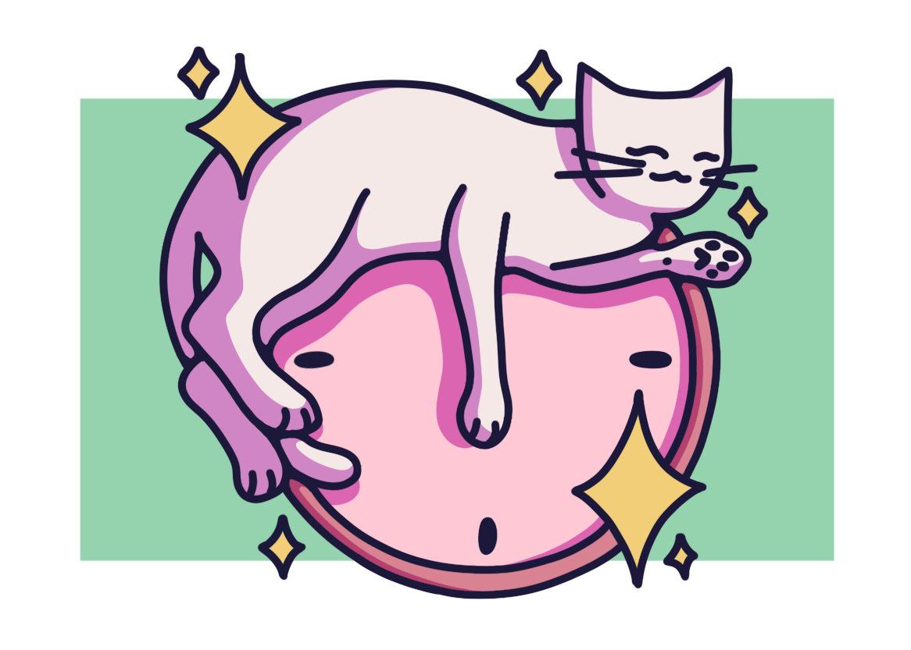
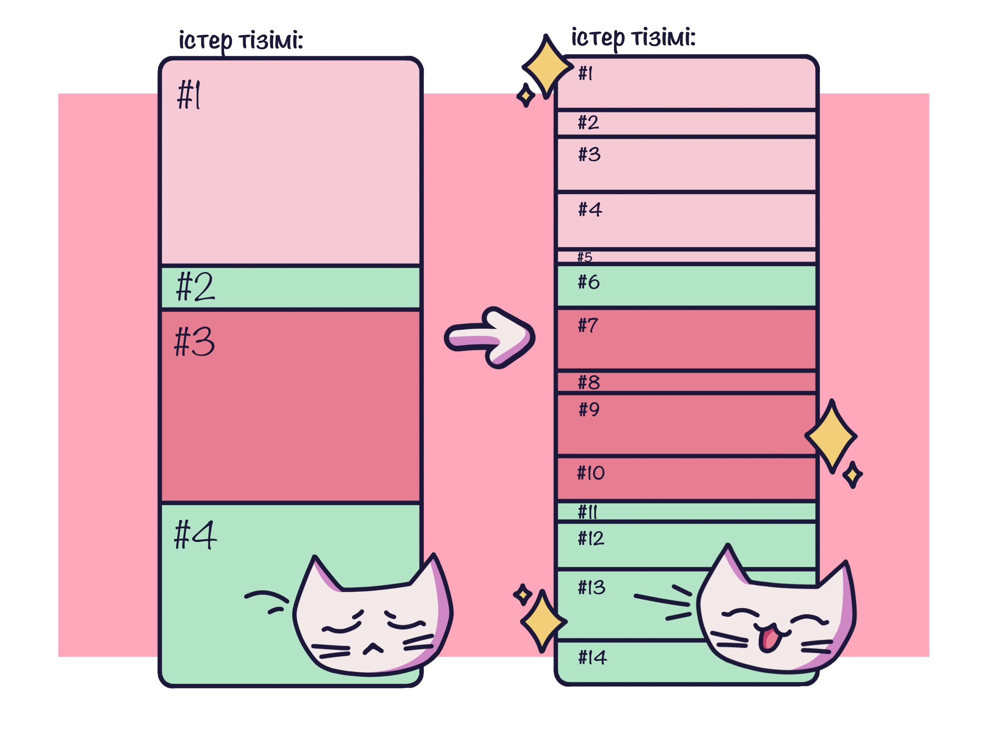
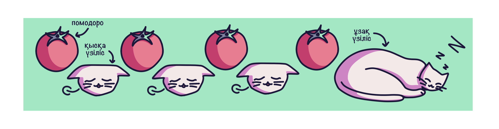
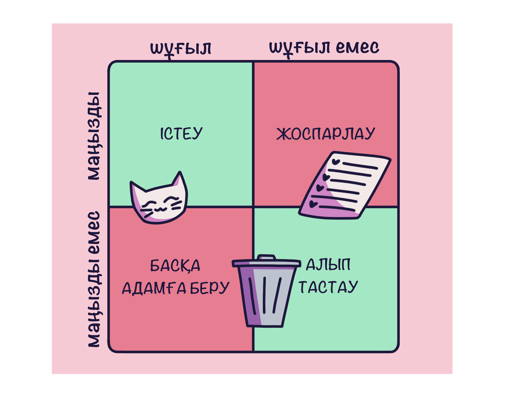
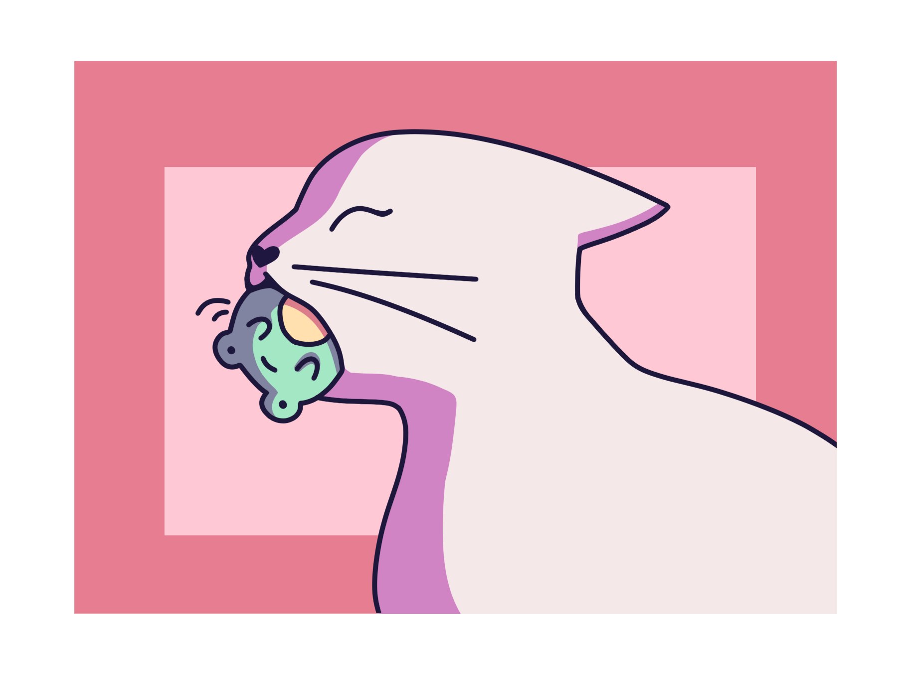

Құрал
Add
- Мысалдар:
- Ағылшын тілінде ұзақ мерзімді ҚБЖ жасау
- Қызметтік жобаны аяқтау
- Математика ҚБЖға дайындалу
- ...
Кіріспе
Уақытты басқару — бұл аз уақытта көп тапсырмаларды орындай алатындай уақытты ұйымдастыру және бөлу тәсілі. Бұл сізге ең қарбалас кезеңдерде де стресстен аулақ болуға, өнімділікті арттыруға және кез келген мақсатқа жетуге көмектеседі [2].

Уақытты басқаруды үйренудің ең оңай жолы-келесі қадамдарды орындау:
- Сізде қанша уақыт бар екенін анықтаңыз
- Сізге қажет барлық жұмысты жазып алыңыз
- Қандай тапсырмалар қажет емес екенін анықтаңыз, кез-келген жағымсыз салдарсыз берілуі немесе кейінге қалдырылуы мүмкін, өйткені барлық тапсырмаларды бір күнде немесе тіпті бір аптада орындау әдетте мүмкін емес
- Әрекеттеріңізді жоспарлаңыз — алдымен жеке қажеттіліктеріңізді (ұйқы, тамақтану, демалу және т. б.), содан кейін кездесулерді және олардан кейін ғана барлық басқа тапсырмаларды ұйымдастырған жөн
- Әр іс арасында біраз уақыт қалдыруға тырысыңыз, себебі:
- кейбір тапсырмалар жоспарланғаннан ұзағырақ уақыт алуы мүмкін
- күтпеген жағдайлар туындауы мүмкін (сіз білмеген шұғыл тапсырмалар, ауру және т. б.) [3]
Кеңестер
Жоспарлауды одан да тиімді және оңай ету үшін бірнеше кеңестер берілген.
-
Әрбір тапсырманы орындау 15 минуттан аспауы үшін барлық үлкен тапсырмаларды кішірек
тапсырмаларға бөліңіз [4].

- Егер сізге ауыр жұмыс жасау қиын болса, сіз өзіңізді тапсырманың қиын емес екеніне сендіре аласыз — "Мен оған 10 минуттан артық уақыт жұмсамаймын!", бұл сізді ынталандыруға көмектеседі. Алайда, 10 минуттан кейін сіз жұмысты жалғастыра аласыз, өйткені сіз бастау әрқашан ең қиын бөлік екенін көресіз [1].
-
Шаршамау үшін Помодоро техникасын қолданыңыз — 20-30 минут жұмыс жасаңыз (жұмыс сессиясы
"Помодоро" деп аталады), содан кейін 5-10 минут демалыңыз. Әрбір төртінші Помодородан кейін
ұзақ үзіліс жасаңыз — 15-25 минут. Әр сессияның ұзақтығы сіздің қажеттіліктеріңізге,
тілектеріңізге және қарқыныңызға сәйкес реттелуі мүмкін [4].

-
Өз іс-әрекеттеріңізді жоспарламас бұрын, төмендегі матрицаны қолдана отырып, шұғыл/шұғыл
емес және маңызды/маңызды емес мәселелерге басымдық беріңіз [4].

-
Таңертең "Бақа" жеуден бастаңыз — алдымен ең қиын тапсырманы орындаңыз. Күннің басында сізде
ең көп энергия бар және сіздің миыңыз әлі жүктелмеген, сондықтан сіз ең қиын тапсырманы
неғұрлым тез орындасаңыз, соғұрлым оңай болады. Сонымен қатар, сізде жеңіл тапсырмалар үшін
жеткілікті қуат болады және олар сізге ауыртпалық болмайды [4].

Қорытынды
Бірақ сіз таңдаған техникаға қарамастан, оның сізге ыңғайлы екеніне және сізге ешқандай зиян тигізбейтініне көз жеткізіңіз. Өзіңізге қамқоршыл болыңыз және денсаулық оқудан гөрі маңызды екенін ұмытпаңыз!